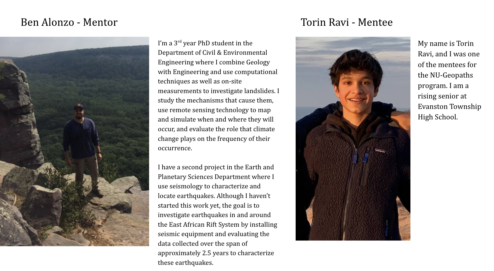

NU-Geopaths was started in 2021 as a 3-week, full time geoscience internship for high school students. It recruits students from Round Lake High School, Lindblom Math and Science Academy, and Evanston Township High School. The program connects a Northwestern PhD student as a mentor with a high school student as a mentee, with the eventual goal of presenting a project on the research done by the mentee.
Our aim was to investigate the failure mechanisms of landslides to understand how and when they occur, and to study the effectiveness of slope failure mitigation strategies, all by using geotechnical analysis software.
